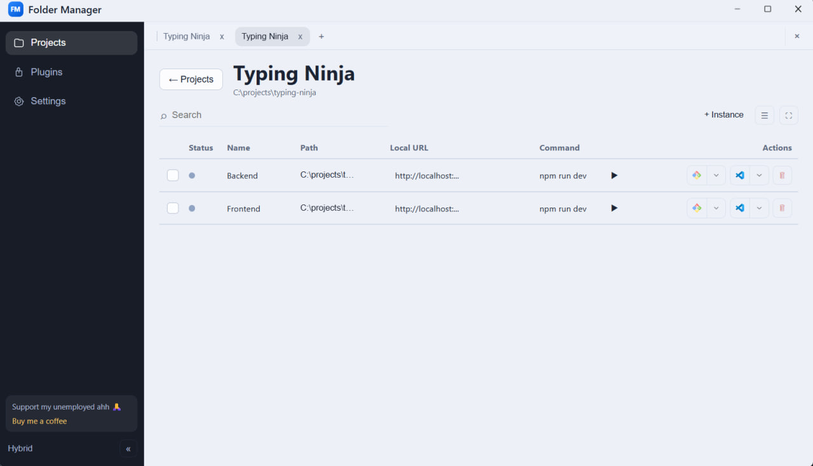
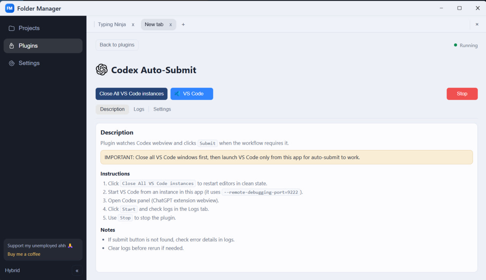

Modern design
Flexible editor instance management in a modern, clean interface.
Manage VS Code and Cursor instances, processes, and terminals from a single panel without constantly switching between windows.
Версия 2.3.3 • VS Code + Cursor • Plugins included

Flexible editor instance management in a modern, clean interface.

Use helpful plugins, including Auto Submit Codex, to speed up your daily workflow.
One installer, one control center, and far less routine work.
Download Folder.Manager-Setup-2.3.3.exe